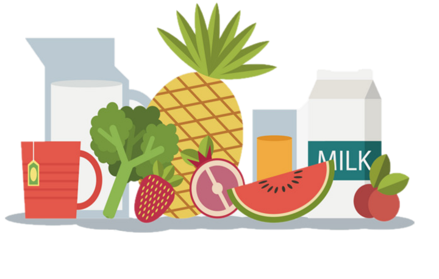

NetFood
Conocenos
Servicios
Sobre Nosotros
Log in
Register
NetFood
La app que te salvará cuando no sabes que hacer de comer
Netfood te recomendará recetas
Haz un inventario de tus alimentos
Ten a mano tu plan de comidas o dietas 
A continuación verás una lista de operaciones que puedes realizar con nuestra app
Podrás buscar diferentes recetas
Puedes filtrar los resultados según tus preferencias
Haznos saber si tienes alguna alérgia para evitar mostrarte recetas que contengan esos alimentos
Registrate para poder utilizar nuestro gestor de dietas
Define las dietas diarias para organizar todas tus comidas
Haz el inventarios de alimentos que tengas en casa
Podemos recomendarte recetas si nos introduces los alimentos que tienes disponibles